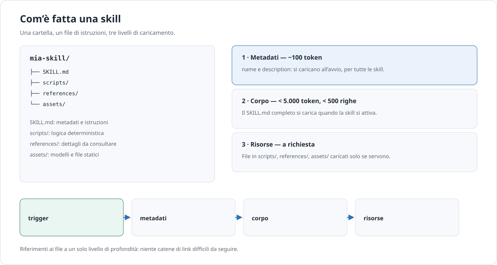

Approfondimento · AI
Skill, metodi e framework
Una skill è un modo per impacchettare una procedura: non un prompt più lungo, ma un piccolo manuale che l’agente apre solo quando serve. La stessa idea sta dietro a Superpowers, Caveman e a molti framework che promettono di rendere un agente più disciplinato.
In breve. Una skill è conoscenza procedurale scritta una volta e riusata molte. Costa poco finché non si attiva, ma può eseguire codice: trattala come codice di terzi, non come una nota a margine.
Che cos’è una skill
Quattro cose vengono spesso confuse. Una skill è conoscenza procedurale: spiega come fare un compito, con quali controlli e in quale formato. Un tool è una funzione che esegue un’azione. Un server MCP è il protocollo con cui un’applicazione espone tool e risorse. Un agente è il ciclo che decide cosa fare e quando.
| Skill | Tool | Server MCP | Agente | |
|---|---|---|---|---|
| Cos’è | Procedura scritta in Markdown | Funzione eseguibile | Contratto per esporre capacità | Ciclo di decisione e azione |
| Chi la usa | Il modello, quando si attiva | Il modello o il codice | Un host con i suoi client | Il modello, con tool e regole |
| Unità di riuso | Cartella versionabile | Firma e comportamento | Server e sue primitive | Configurazione e prompt |
| Rischio principale | Attivazione sbagliata, script fragili | Effetti collaterali | Permessi e injection | Loop, costo, autonomia |
Le Agent Skills sono uno standard aperto: la specifica
è pubblica e un numero crescente di client le legge. Il formato
è volutamente semplice — una cartella con un file
SKILL.md e, se serve, script e riferimenti — perché
il valore non è nella tecnologia, ma nel fatto che una procedura
possa essere letta, revisionata e spostata da uno strumento all’altro.
La portabilità è il vero argomento a favore dello standard. Se una procedura è scritta come skill, può essere spostata da un client all’altro senza riscriverla; se è scritta come prompt dentro un prodotto, resta lì. Non è una garanzia assoluta — i client interpretano i dettagli in modo diverso — ma è molto meglio di un formato proprietario.
C’è anche un vantaggio economico, oltre che organizzativo.
Cento skill caricate come metadati costano circa 10.000 token in tutto,
una volta; cento prompt completi costerebbero il loro contenuto a ogni
chiamata. Il risparmio però si paga in latenza di attivazione e in
precisione: se la description è ambigua, il modello
apre la skill sbagliata e il risparmio diventa un errore.
La differenza con un prompt è il momento del caricamento. Un prompt entra nel contesto a ogni chiamata; una skill entra solo quando il modello decide che serve, e solo nella parte necessaria. È la stessa idea dei manuali di officina: non li leggi tutti, apri la pagina giusta.
Anatomia e disclosure progressiva
Una skill è una directory. Il nome della directory è il nome della skill; dentro c’è un file di istruzioni e, se servono, materiali di supporto.
mia-skill/
├── SKILL.md # metadati e istruzioni
├── scripts/ # logica deterministica
├── references/ # dettagli da consultare
└── assets/ # modelli e file staticiIl frontmatter YAML dichiara i metadati. I limiti non sono decorativi: sono ciò che permette a un client di caricare cento skill senza esaurire il contesto.
| Campo | Obbligatorio | Limite | Note |
|---|---|---|---|
name |
Sì | 64 caratteri | Minuscole, numeri e trattini; niente trattini iniziali, finali o consecutivi; deve coincidere con il nome della directory. |
description |
Sì | 1.024 caratteri | Dice cosa fa e quando usarla. È il testo che decide l’attivazione. |
license |
No | — | Utile per la distribuzione e per chi deve approvare. |
compatibility |
No | 500 caratteri | Requisiti di ambiente, dipendenze, versioni. |
metadata |
No | — | Coppie chiave-valore libere: proprietario, versione, contatti. |
allowed-tools |
No | — | Sperimentale: limita i tool disponibili quando la skill è attiva. |
Il caricamento avviene in tre fasi. All’avvio il client legge solo
name e description di tutte le skill: circa 100
token per skill. Quando una skill si attiva, carica il corpo del
SKILL.md, per il quale la specifica consiglia meno di 5.000
token e meno di 500 righe. Solo se il compito lo richiede, carica i file
in scripts/, references/ e
assets/. Questa è la disclosure
progressiva: paghi il dettaglio solo quando ti serve.
La description è il campo più difficile e il
più importante. Deve contenere due cose insieme: cosa fa la skill
e in quali situazioni va usata. “Gestisce report” è
troppo vago; “Prepara il report settimanale delle vendite dai dati
esportati” dice cosa, ma non quando. Aggiungi le parole che usa chi
chiede: “report della settimana”, “riepilogo
vendite”, “aggiornamento per la riunione”. Non
elencare tutte le varianti possibili: scegli quelle che distinguono il
compito da quelli vicini.
Il corpo, invece, deve essere scritto per essere seguito, non per essere ammirato. Frasi brevi, passi numerati, controlli verificabili. Se una parte richiede più di una pagina, non è il corpo: è un riferimento.
I riferimenti ai file devono restare a un solo livello di profondità. Una catena di link è facile da scrivere e impossibile da seguire: il modello apre un file, trova un altro riferimento, e nel frattempo ha consumato il contesto che serviva al compito.

Creare una skill, passo per passo
Il punto di partenza non è “scrivo una skill”, ma “ho un compito che ripeto”. Un buon segnale è la frase “l’ho già spiegato la settimana scorsa”: se la ripeti, merita una skill. Un cattivo segnale è un compito che hai fatto una volta sola e che forse non rifarai. Sette passi:
- Scegli un compito ricorrente, con un inizio e una fine chiari.
- Scrivi una
descriptionche dica cosa fa e quando usarla, con le parole che userebbe chi chiede. - Scrivi il corpo con cinque parti: quando usarla, quando non usarla, procedura, controlli, formato di output.
- Sposta i dettagli lunghi in
references/. - Metti la logica deterministica in
scripts/: non chiedere al modello di fare aritmetica che può fare un programma. - Testa l’attivazione e il risultato.
- Versiona e annota le modifiche.
Un esempio completo, neutro e senza comandi di un harness specifico:
report-settimanale/
├── SKILL.md
├── references/
│ └── formato.md
└── scripts/
└── aggrega.py---
name: report-settimanale
description: Prepara il report settimanale delle vendite dai dati esportati. Usala quando l'utente chiede il report della settimana, il riepilogo vendite o l'aggiornamento per la riunione del lunedì.
license: MIT
compatibility: richiede accesso alla cartella dati/ e a Python 3.
metadata:
owner: team-vendite
versione: "1.2"
---
# Report settimanale
## Quando usarla
Quando esistono file di vendita della settimana e serve un riepilogo
per regione, con confronto sulla settimana precedente.
## Quando non usarla
Se i dati sono già aggregati, se manca la settimana precedente
o se la richiesta riguarda previsioni: in questi casi spiega cosa manca.
## Procedura
1. Elenca i file in dati/vendite-*.csv della settimana richiesta.
2. Esegui scripts/aggrega.py con la settimana come argomento.
3. Controlla che il totale delle righe coincida con il totale dei file.
4. Compila il report seguendo references/formato.md.
## Controlli
- Ogni numero deve avere una fonte nel file di origine.
- Se un file è illeggibile, fermati e segnala quale.
- Non arrotondare prima della verifica dei totali.
## Formato di output
Markdown con: titolo, periodo, tabella per regione, confronto
percentuale, tre righe di commento. Nessun dato personale.# scripts/aggrega.py (pseudocodice)
leggi i file della settimana
verifica la presenza della colonna "importo"
somma per regione e per giorno
confronta con la settimana precedente
scrivi report.md con la data nel nome
se manca un file: esci con codice 2 e indica il percorsoResisti alla tentazione di mettere tutto nella skill. Una skill che spiega tre compiti diversi si attiva a sproposito e confonde il modello. Se ti accorgi che la procedura ha due inizi e due fini, hai due skill. E se il compito cambia ogni settimana, forse non è una skill: è una conversazione.
Nota cosa non c’è: nessun comando di installazione, nessun nome di prodotto, nessuna istruzione che dipenda dal contesto di chi l’ha scritta. La skill deve funzionare per una persona che non ti conosce e che apre la cartella tra sei mesi.
Testare una skill
Una skill ha due modi di fallire: non si attiva quando dovrebbe, oppure si attiva quando non dovrebbe. Il primo test è quindi un test di attivazione, non di contenuto.
| Test | Cosa verifica | Come |
|---|---|---|
| Attivazione positiva | La skill si carica sulle richieste giuste. | 10 richieste realistiche, formulate in modi diversi. |
| Attivazione negativa | La skill resta spenta sulle richieste vicine ma diverse. | 10 richieste che usano parole simili per altri scopi. |
| Compito | Il risultato rispetta il formato e i controlli. | Esegui la procedura su dati veri e confronta con l’atteso. |
| Regressione | Una modifica non rompe i casi già superati. | Riesegui l’intera suite a ogni versione. |
| Costo | Il corpo e le risorse restano entro i budget. | Misura i token caricati per attivazione. |
Le dieci richieste positive non devono essere variazioni della stessa
frase. Cambia il registro, la lunghezza, il livello di dettaglio. Le
negative devono essere insidiose: richieste che contengono le stesse
parole chiave ma un obiettivo diverso. Se la description
è troppo larga, la skill si attiva sempre; se è troppo
stretta, non si attiva mai.
Per il frontmatter esiste un controllo strutturale. Se lo strumento è installato, il comando è:
skills-ref validate ./report-settimanale
Il tasso di attivazione corretto è una metrica semplice: quante
delle dieci richieste positive attivano la skill, quante delle dieci
negative restano spente. Un valore come 9/10 e 10/10 è un buon
punto di partenza; 5/10 significa che la description non
descrive il compito, 0/10 negative significa che è troppo larga.
Annota i falsi positivi: sono i più costosi, perché
consumano contesto e possono portare il modello fuori strada.
La validazione dice se il formato è corretto, non se la skill è utile. Quella è una misura sul compito: tasso di attivazione corretto, risultato conforme, costo in token. La lunghezza non è una misura di qualità; spesso è il contrario.
Distribuire e mantenere
Una skill vive in un repository, come il codice. Può essere distribuita tramite un marketplace di plugin, un installer compatibile o una semplice cartella condivisa. Il metodo conta meno del contratto: chi la installa deve sapere cosa scarica, da quale versione e con quali permessi.
Il versionamento deve essere leggibile: un numero di versione e un elenco delle modifiche che spieghino se il comportamento è cambiato. Una skill che aggiorna la procedura senza dirlo è peggio di una skill vecchia: ha cambiato il risultato di un flusso che qualcuno dava per stabile.
La compatibilità tra client non è garantita dalla sola
specifica. Alcuni client leggono i metadati e non eseguono script; altri
supportano campi sperimentali; altri ancora applicano regole proprie di
attivazione. Dichiara nel compatibility ciò che serve
e prova la skill su più di un client, se puoi.
Prevedi anche la dismissione. Una skill che non serve più va rimossa o marcata come deprecata, con una nota che dica cosa usare al suo posto. Se resta installata, continua a occupare metadati e a competere per l’attivazione con le skill nuove.
Infine la governance, la parte che nessuno scrive e che tutti rimpiangono: chi approva una skill nuova, chi la mantiene, con quale frequenza si aggiorna, come si revoca. Una skill senza proprietario è un debito tecnico con un prompt.
Metodi e framework
Esistono progetti che impacchettano metodi interi — non solo una procedura — sotto forma di skill, comandi e istruzioni iniziali. Sono interessanti per due motivi: mostrano cosa si può fare con le skill e mostrano quanto velocemente un metodo diventi un’opinione. Numeri e dichiarazioni sono quelli pubblicati dai progetti, rilevati l’11 novembre 2026.
Leggi questa sezione come una rassegna, non come una classifica. Ogni progetto risponde a una domanda diversa: come si struttura il lavoro, come si riduce il rumore, come si mantiene il contesto, come si parte velocemente, come si ricorda tra sessioni. La domanda giusta non è “quale è il migliore”, ma “quale problema ho”.
Superpowers
Che cos’è. Una metodologia completa di
sviluppo per coding agent, costruita su skill componibili e istruzioni
iniziali che ne impongono l’uso. Il flusso tipico è
brainstorming, design, piano, implementazione, review.
Unità di confezione. Skill, subagenti, hook e
istruzioni di avvio, con supporto per molti harness.
Punto forte. Disciplina e tracciabilità: il lavoro
lascia documenti intermedi invece di sparire in una chat.
Costo e rischio. Overhead di token e di processo,
opinionato, manutenzione delle skill, supporto variabile tra harness.
Quando usarlo. Progetti con più fasi e bisogno di
memoria del processo. Repository obra/superpowers, licenza
MIT, oltre 316.000 stelle.
Caveman
Che cos’è. Una skill e un proxy per coding agent che riduce i token facendo parlare l’assistente in modo telegrafico, mentre codice, comandi, percorsi ed errori restano esatti. Ha modalità caveman, ultracave e megacave, e una funzione di “auto-clarity” per avvisi di sicurezza e azioni irreversibili. Unità di confezione. Skill e proxy, con installer dedicato. Punto forte. Riduzione dichiarata dei token di input. Costo e rischio. La compressione può togliere sfumature; il guadagno dipende dal compito. Quando usarlo. Sessioni lunghe in cui la verbosità costa più del dettaglio.
Il progetto (JuliusBrussee/caveman, Apache-2.0, oltre 119.000
stelle) dichiara il 33,2% in meno di token di input su sessioni intere e
una riduzione del 65% in alcune prove. Dichiara anche, con onestà
rara, che “Answer concisely” è il vero baseline e che
la voce caveman taglia solo il 3% in più alla mediana, mentre
ultracave arriva al 35%. Sono dichiarazioni del progetto, non misure
indipendenti. Nota: abczsl520/caveman-agent è un
progetto diverso, non lo stesso Caveman.
BMAD
Che cos’è. Un metodo agile per lo sviluppo
guidato dall’AI, in cui i workflow producono brief, specifiche e
architettura che diventano contesto per la fase successiva.
Unità di confezione. Workflow, agenti e modelli di
documento. Punto forte. Continuità del contesto e
decisioni esplicite. Costo e rischio. Processo pesante
per i lavoretti, versione in transizione, licenza da verificare.
Quando usarlo. Progetti con più persone e fasi che
devono lasciare traccia. Repository bmad-code-org/BMAD-METHOD,
oltre 55.000 stelle; la release stabile è la v6.12, la v7 è
in alpha, e il repository non dichiara una licenza SPDX standard.
ECC
Che cos’è. Un “agent harness
performance optimization system”: un pacchetto di agenti, skill,
comandi, hook, regole e convenzioni MCP.
Unità di confezione. Plugin con manifest.
Punto forte. Una batteria pronta all’uso.
Costo e rischio. Superficie enorme, opinionato,
manutenzione e audit continui. Quando usarlo. Quando
vuoi partire da un insieme ampio e sei disposto a studiarlo.
Repository affaan-m/ECC, licenza MIT, oltre 301.000 stelle;
il manifest dichiara 67 agenti, 271 skill e 92 shim di comandi legacy.
Sono numeri del manifest, non misure indipendenti.
Hermes Agent
Che cos’è. Un agente “self-improving”
con un loop di apprendimento che crea skill dall’esperienza, le
migliora durante l’uso e costruisce un modello dell’utente tra
sessioni; supporta più backend di terminale.
Unità di confezione. Agente e skill generate.
Punto forte. Memoria e apprendimento.
Costo e rischio. Autonomia, privacy, evaluation,
lock-in. Quando usarlo. Sperimentazione su agenti che
devono ricordare. Repository NousResearch/hermes-agent,
licenza MIT, oltre 262.000 stelle.
| Progetto | Licenza | Stelle | Unità principale | Ideale per |
|---|---|---|---|---|
| Superpowers | MIT | oltre 316.000 | Skill e flusso di sviluppo | Processo tracciabile |
| Caveman | Apache-2.0 | oltre 119.000 | Skill e proxy | Ridurre la verbosità |
| BMAD | Da verificare | oltre 55.000 | Workflow e documenti | Progetti strutturati |
| ECC | MIT | oltre 301.000 | Plugin con manifest | Batteria pronta |
| Hermes Agent | MIT | oltre 262.000 | Agente con apprendimento | Memoria tra sessioni |
Le stelle misurano popolarità, non qualità. Un progetto con molte stelle può essere ottimo per un caso e inadatto per un altro; un progetto piccolo può essere più adatto al tuo. Prima di adottare un metodo, guarda licenza, manutenzione, compatibilità con il tuo strumento e costo di uscita. E ricorda che un metodo è un insieme di abitudini: se non le condividi, nessun framework le impone.
Sicurezza
Una skill può contenere script eseguibili, leggere file e chiamare la rete. Non è un documento passivo. Le regole sono le stesse che applicheresti a una dipendenza software:
- rivedi il contenuto prima di installare, soprattutto gli script;
- applica il principio dei privilegi minimi e, dove disponibile,
allowed-tools; - fissa la versione e aggiorna con consapevolezza;
- non inserire segreti nel
SKILL.mdné negli esempi; - esegui in sandbox ciò che non conosci;
- registra le attivazioni e le azioni compiute;
- prevedi una procedura di revoca, non solo di installazione.
Un controllo che vale la pena fare prima di installare: apri la cartella e guarda i file. Se ci sono script, leggili. Se ci sono URL, guarda dove puntano. Se ci sono istruzioni che chiedono di disattivare controlli, fermati. La maggior parte delle sorprese sta in tre righe che nessuno legge.
Attenzione. Le skill di terzi sono codice di terzi. Una descrizione innocua non garantisce che lo script dentro faccia quello che dice. Se non puoi leggere il codice, trattalo come sconosciuto: sandbox, permessi limitati e nessun accesso ai segreti.
Lessico minimo
- Skill
- Una procedura impacchettata in una cartella, con metadati e istruzioni, che un agente carica quando serve.
- Disclosure progressiva
- Il caricamento a livelli: prima i metadati, poi il corpo, poi le risorse, solo quando il compito lo richiede.
- Frontmatter
- Il blocco di metadati YAML all’inizio di un file Markdown.
- Trigger
- La richiesta o la situazione che fa attivare una skill.
- Harness
- Lo strumento che esegue l’agente: interfaccia, modello, tool, permessi.
- Plugin
- Un pacchetto installabile che può contenere più skill, comandi e configurazione.
Fonti
- Agent Skills, Overview, Specification, Best practices — standard, campi del frontmatter, limiti e disclosure progressiva.
- Anthropic, Agent Skills — presentazione del formato e casi d’uso.
- README di
obra/superpowers— flusso, licenza, stelle. - README di
JuliusBrussee/caveman— modalità, dichiarazioni sui token, baseline. - README di
bmad-code-org/BMAD-METHOD— versioni e workflow. - Manifest di
affaan-m/ECC— agenti, skill e shim dichiarati. - Documentazione di
NousResearch/hermes-agent— loop di apprendimento e memoria.
Fonti consultate l’11 novembre 2026. Stelle, versioni e licenze cambiano: ricontrolla prima di adottare un progetto.